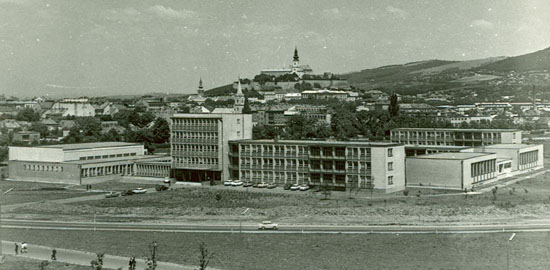

Univerzita Konštantína Filozofa v Nitre je verejná vysoká škola univerzitného typu so sídlom v Nitre.
Predchodcom univerzity bol Pedagogický inštitút zriadený v Nitre v roku 1959. V roku 1964 bol inštitút zrušený a namiesto neho zriadená Pedagogická fakulta. V roku 1992 bola zlúčením Pedagogickej fakulty a Vysokej školy poľnohospodárskej v Nitre zriadená Nitrianska univerzita, ktorá bola však ešte v tom istom roku rozdelená na Vysokú školu poľnohospodársku a Vysokú školu pedagogickú. Súčasný názov má univerzita od roku 1996, keď bola Vysoká škola pedagogická v Nitre zákonom č. 324/1996 Z.z. premenovaná na Univerzitu Konštantína Filozofa v Nitre
Zdroj: www.wikipedia.org
Univerzita si za globálny strategický cieľ zvolila formovanie UKF ako všeobecnej univerzity s prioritnou orientáciou na oblasť pedagogických, humanitných, prírodných, umeleckých a sociálnych vied a zdravotníctva. V záujme dosiahnutia tohto cieľa si UKF predsavzala, že jej ústrednou pozíciou bude poskytovanie vysokoškolského vzdelávania, tvorivé vedecké bádanie a umelecká činnosť.
Hlavné strategické zámery a z nich vyplývajúce ciele na roky 2007 – 2017 sú v dlhodobom zámere definované nasledovne:
UKF bude atraktívnou vzdelávacou inštitúciou.
UKF bude vedeckou inštitúciou spĺňajúcou národné i medzinárodné kritériá.
UKF bude centrom celoživotného vzdelávania a centrom spoločenského a kultúrneho života nitrianskeho kraja a širšieho regiónu.
UKF bude zlepšovať podmienky na plnenie hlavných činností univerzity.
V záujme zlepšovania podmienok na plnenie hlavných činností univerzita prioritne sústredí pozornosť na splnenie nasledovných dvoch strategických cieľov:
1 UKF bude mať funkčnú univerzitnú knižnicu, zodpovedajúcu akademickým štandardom 21. storočia.
2 UKF bude efektívne využívať informačné a komunikačné
technológie na úrovni aktuálnych poznatkov a služieb.
Zdroj: www.ukf.sk
Univerzita Konštantína Filozofa v Nitre bola schválená Národnou radou Slovenskej republiky 23. októbra 1996. Slávnostná inaugurácia sa konala 13. februára 1997 za účasti predstaviteľov ministerstva školstva SR, vlády SR, rektorov vysokých škôl, vysokých cirkevných predstaviteľov, predstaviteľov a kultúrnej verejnosti SR, kraja i mesta Nitry. Starosloviensky chorál prednesený speváckym zborom študentov univerzity v deň slávnostnej inaugurácie navodzoval hĺbavú atmosféru čias, keď za pôsobenia Konštantína a Metoda sa hlaholika stala prvým písmom organizovanej vzdelanosti a staroslovienčina prvým spisovným jazykom na Veľkej Morave a v rámci nej aj Nitrianskeho kniežatstva.

Malé a veľké medzníky v dejinách UKF
Dejinnú retrospektívu univerzity tvoria jednotlivé etapy takmer polstoročného vysokoškolského vzdelávania:
1959 – Vzniká Pedagogický inštitút v Nitre. Vytvorený bol na základe vládneho nariadenia č. 57/1959 Zb. Podľa neho boli zrušené dovtedajšie vysoké, vyššie a stredné pedagogické školy a konštituované pedagogické inštitúty na prípravu učiteľov 1. a 2. stupňa základných škôl. Na Pedagogickom inštitúte v Nitre v roku 1959 pracovalo 30 pedagógov a študovalo 316 študentov.
1960 – Do systému vzdelávania Pedagogického inštitútu sa pričleňuje príprava učiteľov pre školy s vyučovacím jazykom maďarským.
1964 – Pedagogický inštitút sa premenúva na Pedagogickú fakultu.
1977 – Samostatné pedagogické fakulty sú zrovnoprávnené s filozofickými, prírodovednými a telovýchovnými fakultami univerzít, získavajú právo vzdelávať aj učiteľov pre stredné školy. Prví poslucháči študujúci učiteľstvo všeobecnovzdelávacích predmetov pre stredné školy nastúpili na Pedagogickú fakultu v Nitre v školskom roku 1977/1978.
1992 – Niekoľko mesiacov existuje Nitrianska univerzita a Pedagogická fakulta je jej súčasťou (1. 7. – 11. 12. 1992).
1992 – Konštituuje sa Vysoká škola pedagogická v Nitre.
1993 – Vznikajú Fakulta humanitných vied a Fakulta prírodných vied a začínajú svoju vzdelávaciu a vedeckovýskumnú činnosť.
1996 – Konštituuje sa Univerzita Konštantína Filozofa v Nitre. Jej vytvorenie bolo schválené Národnou radou Slovenskej republiky 23. októbra 1996.
1997 – 13. februára sa uskutočnila slávnostná inaugurácia Univerzity Konštantína Filozofa v Nitre.
1998 – Fakulta humanitných vied sa premenovala na Filozofickú fakultu.
2001 – Vzniká Fakulta sociálnych vied a zdravotníctva.
2003 – Zlúčením národnostných sekcií fakúlt a univerzity vzniká Fakulta stredoeurópskych štúdií.
2010 – Univerzita Konštantína Filozofa v Nitre získala status univerzitnej vysokej školy.
V akademickom roku 2009/2010 na UKF v Nitre v dennej a externej forme študovalo vyše 12 000 študentov a pracovalo vyše 500 vedcov a pedagógov a ďalších 500 prevádzkových a administratívnych zamestnancov.
Zdroj: www.ukf.sk